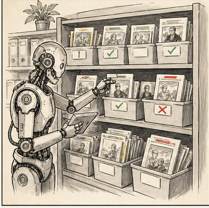

структура
Где лежат workflows, prompts, examples, gates, changelog.
Собираем структуру, владельцев, примеры, рубрики, tone / style graph, quality gates и правила обновления. Без этого каждый снова начинает с пустого чата.

Где лежат workflows, prompts, examples, gates, changelog.
Кто добавляет примеры, кто утверждает обновления.
Как накапливать голос редакции через evidence.
Что потом можно подключать через agents / MCP.
Хорошие outputs, плохие outputs, ручные правки, повторяющиеся ошибки и решения владельцев должны попадать в hub. Иначе курс закончится красивыми воспоминаниями, а не изменением работы.
00_startкак пользоваться, роли, уровни выхода
pipelinesтекст, видео, визуал, аудио, контур
gatesфакты, видео, визуал, аудио, безопасность
examplesapproved / rejected / needs review
Разбери пример для AI-hub.
Вход:
- source;
- AI output;
- финальная правка человека;
- канал публикации.
Сделай:
1. Что AI сделал полезно.
2. Где ошибся: факт, тон, структура, формат, риск.
3. Какая ручная правка была ключевой.
4. Какое правило нужно добавить в prompt / Style Graph / gate.
5. Статус: approved, rejected, needs review.Выбрать 2 примера: удачный и проблемный.
Разобрать по prompt: что сохраняем, что запрещаем.
Сформулировать update proposal и owner.
Решает, что становится правилом.
Следит, чтобы примеры и changelog не умирали.
Пробует инструменты и приносит evidence.
Данные, права, публикационные риски.